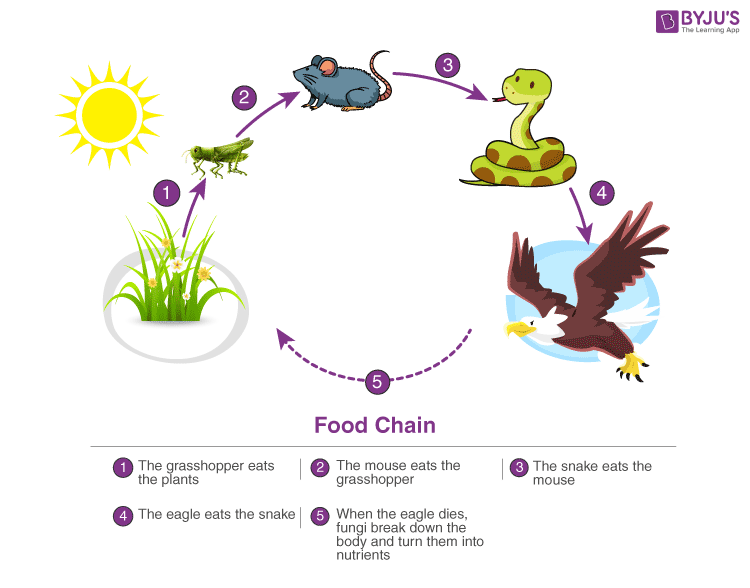
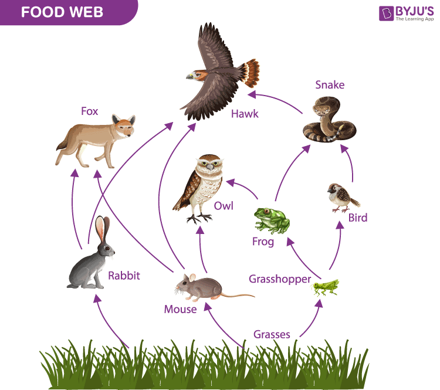

A food chain explains which organism eats another organism in the environment. The food chain is a linear sequence of organisms where nutrients and energy is transferred from one organism to the other. This occurs when one organism consumes another organism. It begins with the producer organism, follows the chain and ends with the decomposer organism. After understanding the food chain, we realise how one organism is dependent upon another organism for survival.
A food chain refers to the order of events in an ecosystem, where one living organism eats another organism, and later that organism is consumed by another larger organism. The flow of nutrients and energy from one organism to another at different trophic levels forms a food chain.
Several interconnected food chains form a food web. A food web is similar to a food chain but the food web is comparatively larger than a food chain. Occasionally, a single organism is consumed by many predators or it consumes several other organisms. Due to this, many trophic levels get interconnected. The food chain fails to showcase the flow of energy in the right way. But, the food web is able to show the proper representation of energy flow, as it displays the interactions between different organisms.
Understanding food chains is vital, as they explain the intimate relationships in an ecosystem. A food chain shows us how every living organism is dependent on other organisms for survival. The food chain explains the path of energy flow inside an ecosystem.